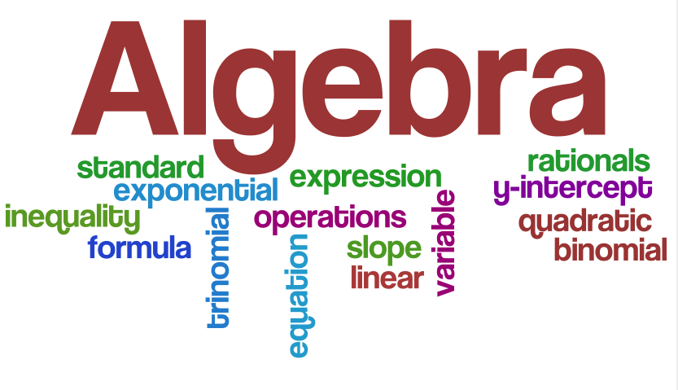

Have no fear – we'll help you figure out everything from X to Y!
Algebra Help
- Exponents
- Radicals
- Polynomials
- Factoring Polynomials
- Division of Polynomials
- Solving Equations
- Solving Inequalities
- Lines
- Solving Quadratics
- Complex Numbers
- Graphing Quadratics (Parabolas)
- Systems of Equations (2x2s)
- Systems of Equations (3x3s)
- Determinants and Cramer's Rule
- Functions
- Inverse Functions
- Exponentials and Logarithms
- Absolute Value Equations and Inequalities
- Sequences and Series
- Combinatorics
- Advanced Graphing
- Graphing Polynomials
- Graphing Rational Functions
- Matrices
- Conic Sections
Popular Topics 
- Lines: Finding the Slope From a Graph
- Lines: Finding a Slope With Just Two Points
- Lines: Finding Equations With Just Two Points
- Drawing X > 7 on a Number Line
- How to Draw Equations With Two > or < Signs
- Solving 2x2 Systems of Equations
- Finding the Domain of a Function
- Finding the Inverse of a Function
- Intro to Logarithms
- Continuous Compounding: Population Growth
